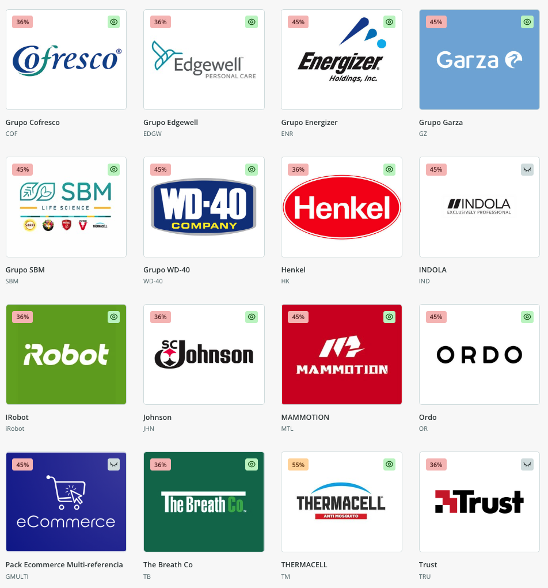

No solo montamos la herramienta: te acompañamos en cada decisión de negocio, de la elección a la puesta en marcha, hasta dejarlo funcionando.
El problema
¿Tu catálogo de producto es un caos?
Miles de referencias repartidas entre el ERP, hojas de Excel y la cabeza de varias personas. Nadie tiene la versión correcta y completa de un producto en un único sitio.
Lo convertimos en tu fuente única de verdad — y de ahí, en inteligencia de producto que alimenta todos tus canales.
Síntomas
Tu mejor catálogo no lo tienes tú: lo tiene Amazon, Shopify o el marketplace donde alguien, en algún momento, cargó los datos con cierto orden.
Cada departamento maneja su propia versión: marketing unas descripciones, ventas otras, logística sus medidas. Tantos errores como personas tocando los datos.
Lanzar un producto a un canal nuevo significa montar los datos a mano desde cero: recopilar del ERP, cruzar con Excels, completar con lo que cada uno recuerda.
No hay un único lugar donde consultar la información fiable de un producto.
Actualizar catálogos es un proceso manual de días o semanas que nadie quiere tocar.
Lo que hacemos
Tú decides crecer; nosotros nos encargamos de la herramienta y de tus datos. Implementación experta sobre Sales Layer.
Reunimos toda la información de tus productos en una sola fuente, con cada ficha completa y validada.
Definimos contigo qué producto va a cada canal, según stock y criterio de negocio.
Estructuramos tus datos con el estándar de Google para que los buscadores y la IA —ChatGPT, Perplexity— entiendan y recomienden tus productos.
Enlazamos marketplaces, e-commerce, catálogo impreso, packaging y analítica. Cada canal se actualiza solo.
Fotos, vídeos y fichas con nomenclatura automática y validadas.
Tus datos entran de muchas fuentes, se enriquecen y normalizan una sola vez en la fuente de verdad, y salen automáticamente a todos tus canales.
Fuentes
Canales
Lo que te entregamos: catálogo centralizado funcionando, conectores activos a tus canales, y un procedimiento claro de quién enriquece qué. No un informe — el sistema montado.
Caso real
El reto
Imprex.es, distribuidor de gran consumo con ~10.000 referencias (Garza, Energizer, WD-40, Henkel), tenía su mejor catálogo en los canales online, no en casa: cada departamento con datos distintos y 3-4 horas de trabajo manual para alimentar cada canal nuevo.

La solución
El resultado
Cómo arrancamos
No solo ejecutamos: te acompañamos en cada decisión de negocio, de principio a fin.
Entendemos cómo gestionas hoy tu catálogo: de dónde salen los datos, quién los toca, a qué canales llegan.
Identificamos dónde se pierde tiempo y dónde se cuelan los errores.
Te decimos qué montar, con qué herramienta y en qué orden — y lo implementamos.
El primer paso es una conversación para entender cómo gestionas hoy tu catálogo y ver por dónde tendría sentido empezar.
El cuadro completo
Datos, Branding y Comunicación no son fases sueltas: son vértices conectados. El catálogo vive dentro de los datos.
Catálogo, PIM y analítica. La información de tu negocio, fiable y lista para usar.
La identidad que convierte esos datos en una marca que diferencia.
Tu marca, distribuida donde están tus clientes.
No hace falta abordarlo todo a la vez. Empezamos por donde más te aporta hoy —los datos— y conectamos los demás vértices a tu ritmo.
Cuéntanos cómo gestionas hoy tu catálogo y vemos juntos por dónde empezar.
Hablemos de tu catálogo →